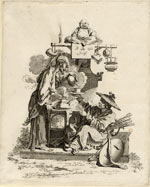
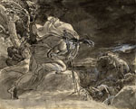
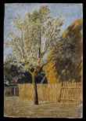

| |
The Department of
Prints and Drawings acquires between 500 and 800 works a year, through
gift and purchase. The basic purchase fund comes from the grant-in-aid
paid every year to the British Museum from the British Government. But
this has been falling since the mid-1980s, and currently there is a
sum of only £8,000 for purchases of prints and drawings. As a consequence
we are now dependent on donations to enable us to achieve worthwhile
results.
We
are very grateful for generous support from the National
Art Collections Fund, the Arcana Foundation,
the British Museum Friends, a group of Patrons
of Old Master Drawings, and many other friends of the Department.
Many collectors, dealers and artists help us with gifts of works of
art rather than funds. If you would like to be sent information about
the Department's annual fund-raising event, please let us know.
Since the Department
serves as the national reference collection of works of art on paper,
and the prime access to material is through the Study Room, the acquisition
policy is to extend the range of coverage as widely as possible, rather
than build in depth where we are already strong. So we actively look
to build up representative collections in areas where we are weak. For
the past 25 years we have been concentrating much of our attention on
20th-century prints and drawings, and have shown the results of our
activity in a series of exhibitions on printmaking
in different countries through the past hundred years. Currently, with
the help of an anonymous donor, we are building up collections of Italian
and Israeli work. Particular attention has also been paid to contemporary
drawing, both in Britain and abroad. We have not neglected earlier periods,
though here we have had to respond to what is available on the market.
This has resulted in acquisitions of documented drawings by artists
who were not already in the collection and prints that fill major gaps
in our holdings; foreign satirical prints, especially from France; and
popular prints from across Europe.
|
|
Recent
acquisitions
Pierre
Alexandre Aveline (1702-60) after François Boucher (1703-70), Fire
from a series of The Four Elements, etching; purchased with funds
from the Arcana Foundation

Anne-Louis
Girodet de Roussy Troison (1767-1824), Armin witnessing the death
of his children, pen and ink and wash; presented by the Patrons
of Old Master Drawings

John
Linnell (1792-1882), An apple tree, watercolour; purchased with funds
from the British Museum Friends and the National Art Collections Fund

Fred Williams (1927-82), You Yangs Pond, intaglio print; presented
by Lyn Williams © the artist's estate
|
|
|
|